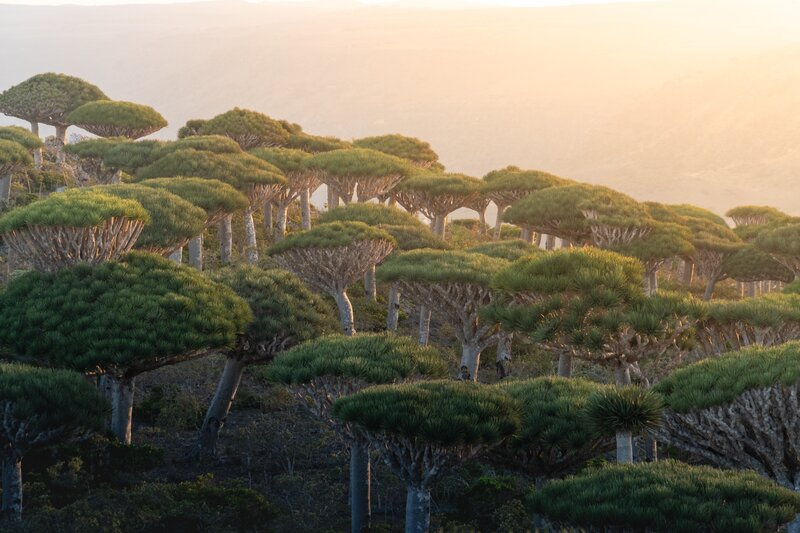
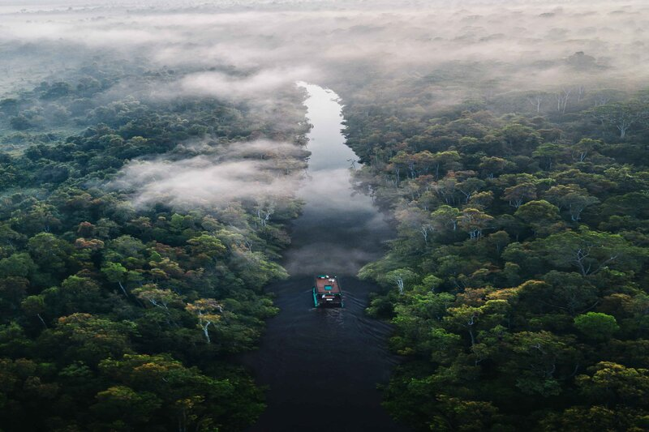
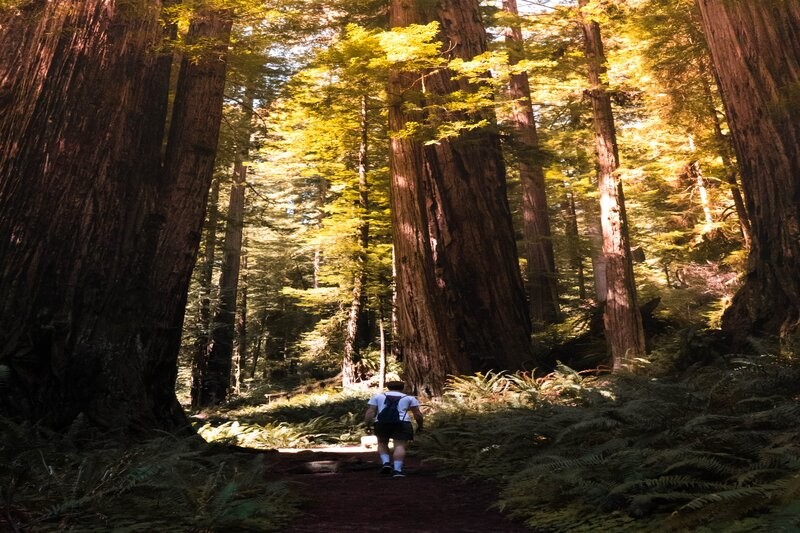

Dragon's Blood Forest
This remote archipelago is located in Socotra, Yemen, and is considered the “Jewel of Arabia”, which is the home of the non-common dragon blood tree, growing atop granite massifs. This forest has been thriving for millions of years therefore there you can find unique species of flora that are in not any other place on the earth, it's considered a space that has frozen at the time.
Amazon Rainforest
It's considered the world's richest and most-varied biological reservoir, located in Brazil, this means that there is a very large diversity of ecosystems living together creating this magnificent forest, Amazon Rainforest is considered the lung of the earth, it has so many florae on it that it can almost immediately clear the air that pass by that forest, Amazon Rainforest is essential for us and also to all the millions of living beings which inhabit it.
Redwood Park
Located in the United States in northern California with an area of 200 miles, its vast space was considered by the UNESCO World Heritage Site and International Biosphere Reserve. This forest has half of the total of the world's oldest redwoods. It's an amazing place to go to and do different activities like camping, bike rides, or long walks. Imagine being surrounded by giant trees and breathing pure air meanwhile you have fun.